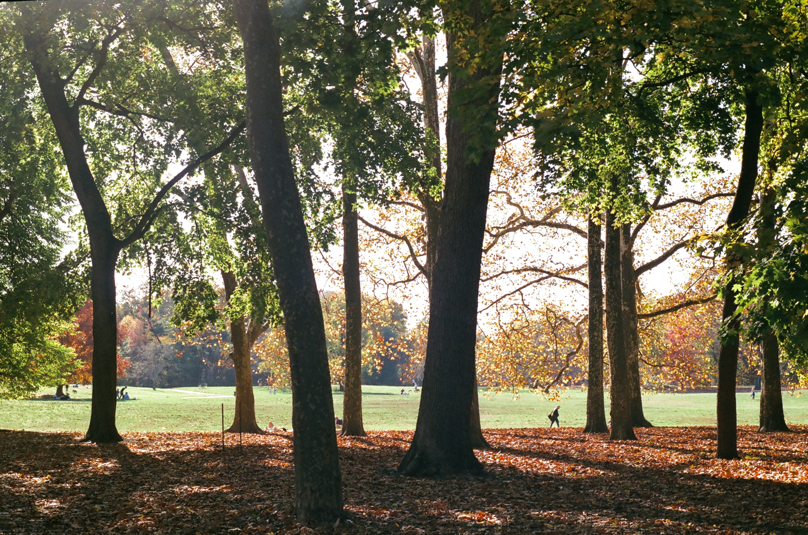

London Planetree

London planetrees are the most common tree in NYC!
Here are some fun facts about planetrees:
- The planetree tolerates pollution and urban life well.
- The London planetree is likely a cross between the Asian planetree and the American sycamore.
- I often mistake planetrees for sycamores!
- A planetree branch almost fell on my friend's head, but she narrowly avoided it!
Sources:
Arbor Day Foundation. “London Planetree.” Accessed October 26, 2025. https://shop.arborday.org/treeguide/368.
NYC Parks. “NYC Tree Map.” Accessed October 26, 2025. https://tree-map.nycgovparks.org/tree-map.